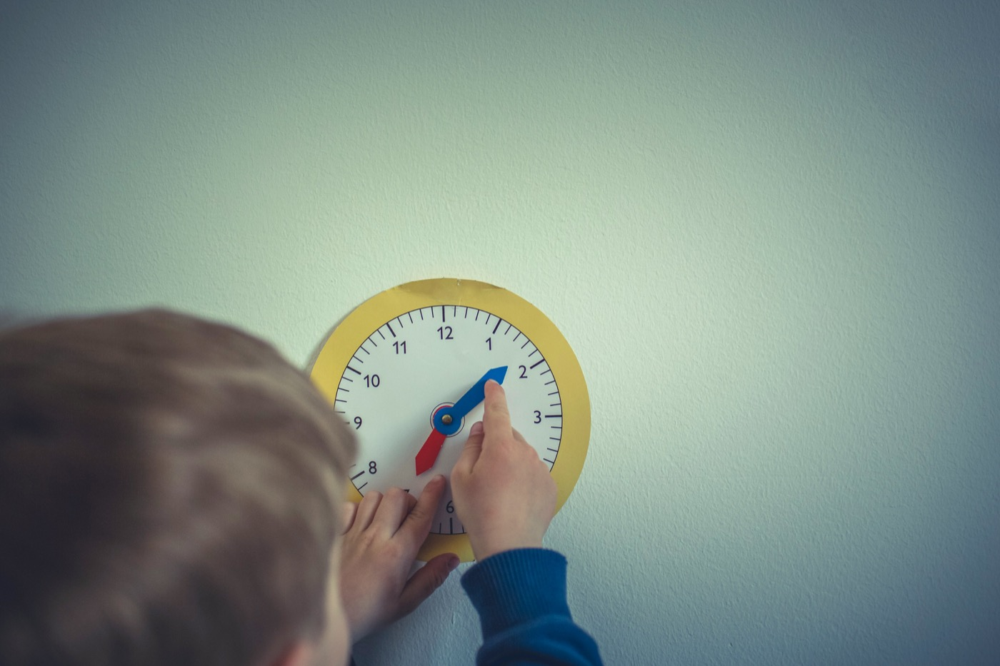
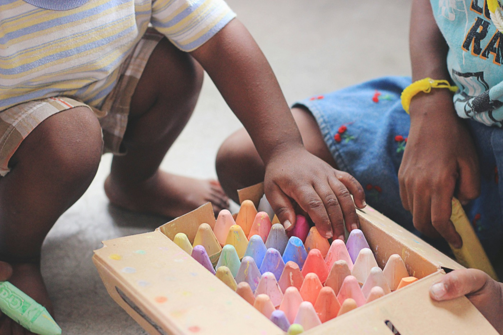

One-to-one support 01
Individual, play-based support grounded in ABA — always assent-based, always on your child's terms. We focus on what matters most: communication, play, everyday skills.
1,250 kr / hour
One-to-one support for autistic children in Stockholm — shaped around your child, never a template.
Book a free introductory callWho I am
Hi! I'm Ingrid — a Board Certified Behavior Analyst (BCBA) working one-to-one with autistic children across Stockholm, in English and Swedish. I hold a Master's specialized in Applied Behavior Analysis from Vanderbilt University, and I'm currently a PhD researcher in autism at Karolinska Institutet (KIND).
After years in ABA clinics, schools and autism research, I've met many, many autistic children — and no two are alike. Your child is not a problem to be fixed. My job is to work alongside them, so they feel safe, understood, and free to grow as exactly who they are.

My approach
If you've read criticism of ABA online — I've read it too, and I take it seriously. My work is neurodiversity-affirming and assent-based: I follow your child's lead, honor how they communicate, and never push a child to simply comply.
The goal is never to make your child "less autistic." It's well-being: more ways to communicate, more autonomy, more play, more good days. If something doesn't feel right for your child, we change it.
How I can help
Individual, play-based support grounded in ABA — always assent-based, always on your child's terms. We focus on what matters most: communication, play, everyday skills.
1,250 kr / hour
Concrete, compassionate tools that work in your everyday life — so progress continues between sessions.
1,250 kr / hour
A no-pressure conversation about your child, in English or Swedish. No commitment — just a first step.
30 min · Free
From first call to everyday life that works
You tell me about your child; I tell you how I work. Free, no strings attached.
I get to know your child's strengths, interests and needs — at their pace.
Goals that feel meaningful to your family, and a program shaped around them.
Regular sessions, support for you as parents, and follow-up that it all feels good for your child.

Certified
BCBA
An international certification with high standards for education, clinical experience and ethics.
Research
Karolinska Institutet
PhD researcher in autism at KIND, the Center of Neurodevelopmental Disorders.
Always
Your child, as they are
Assent-based and neurodiversity-affirming — never changing who your child is.
”Every child can learn and thrive — when we meet them exactly where they are.”
— Ingrid Shragge
Free · 30 minutes · No commitment
Reach out and we'll find a time — in English or Swedish. No pressure, no commitment.
Email me
ingridshragge@gmail.com
+46 70 406 30 22
Stockholm and surrounding areas